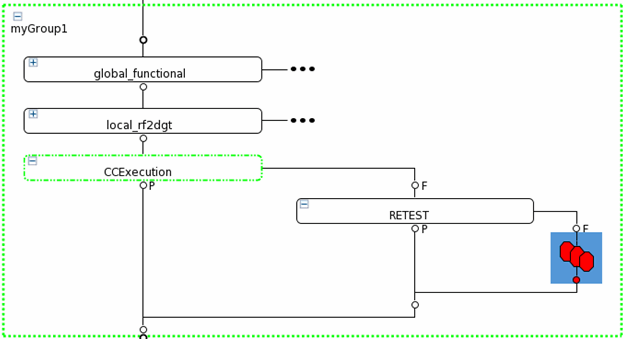
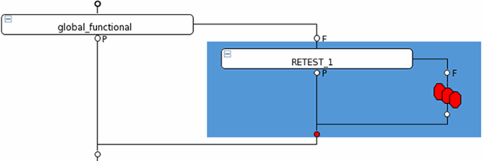

Doing retest with the concurrent test framework
The built-in test method ccf_tml.CCRetest() is provided to retest the
failed test suites in the CCF block. It can also be used in retesting a native test suite that
uses the concurrent test method template. Another built-in test method
ccf_tml.CCT_SYNC() is provided for the retest of test suites using
SMC.
About this task
This is needed when you want to retest some failed test suites immediately after the execution of the CCF block or after the execution of the native test suites using the concurrent test method template.
Retest will only happen on the failed sites. The test suites will be executed serially in the retest.
The following parameters are provided to control the number of retests and the execution of SMC.
- maxRepeatCountOn: Specifies whether to use the parameter maxRepeatCount to control the execution times of retest. It can be ON or OFF. When it is set to ON, the value maxRepeatCount of will be used as the maximum execution times of retest. Otherwise, the maximum execution times of retest is set with the API CCTsetMaxRetestCount() in the test method.
- maxRepeatCount: Specifies the maximum execution times of retest. It is valid when the parameter maxRepeatCountOn is set to ON.
- mSMC_SYNC_ON: Specifies whether to execute the SMC_SYNCHRONIZE() API to wait the SMC process to be done.
Before you begin
The test method of the native test suites are created with the concurrent test method template.
Procedures
Retest in the CTF block in the concurrent mode
- In the test method that needs to be retested when failed, let CCF know when it needs to be retested with CCTsetRetest(). If some other test suites need to be executed first, let CCF know the test suites with CCTPreCondition(). If SMC is used, use SMC_SITE_NUMBER() to retrieve the current site number when needed.
- If SMC is used, insert a test suite executing the built-in test method
ccf_tml.CCT_SYNCbefore the test suite executing ccf_tml.CCExecution. - In the fail branch of the test suite executing ccf_tml.CCExecution, add a test suite
executing the built-in test method
ccf_tml.CCRetest(). If needed, specify the maximum execution times of retest with the parameter maxRepeatCountOn and maxRepeatCount.
- Run the CTF block.
Doing retest for a native test suite serially
- In the test method of the native test suite, request a retest with CCTsetRetest(). If some other test suites need to be executed first, specify the test suites with CCTPreCondition().
- If SMC is not used, in the fail branch of the native test suite, add a test suite executing
the built-in test method
ccf_tml.CCRetest.If SMC is used, insert a test suite using the test method smartCalc.SMC_SYNCHRONIZE after the native test suite. In the fail branch of the test suite, add a test suite executing the built-in test method
ccf_tml.CCRetest.
- Execute the test suites and the fail branch .
Results
In the CTF block, the test suites requesting retest will be retested serially if they failed in the concurrent execution.
The native test suite requesting retest will be retested if it failed.
Functional changes
- Introduced in SmarTest 7.3.1
- SmarTest 7.2.3: Supports the retest of test suite using SMC.
- SmarTest 7.2.3: Supports specifying the maximum execution times of retest.